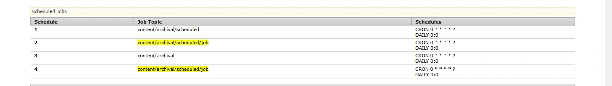
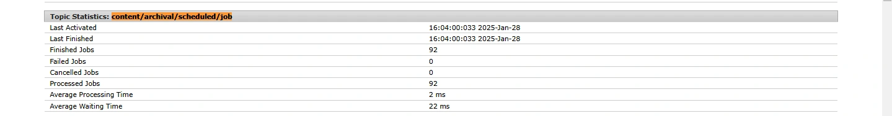
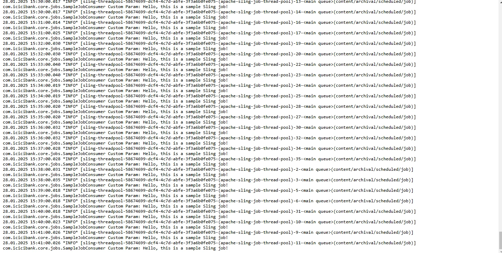

Blogs > Schedule Sling Jobs In AEM
AEM Sites
Schedule Sling Jobs In AEM
December 27, 2024Overview of Sling Jobs in Adobe Experience Manager (AEM)
Apache Sling Jobs are a mechanism in AEM to perform asynchronous tasks reliably. They are built using the Sling Event and Job Handling framework, enabling you to offload tasks like data processing, page replication, or integration workflows that don't need to happen in real-time.In this blog, we will see how to schedule a job in AEM so that it executes at a particular interval of time.
What is Sling Jobs ?
In AEM, Sling Jobs are a part of the event-driven architecture that enables task scheduling, processing, and management in an asynchronous and persistent manner. They are used to perform long-running or non-blocking tasks like importing data, sending notifications, or cleaning up resources.
How Sling Jobs Work
-
Job Creation
-
In AEM, the Sling Job Manager allows you to create jobs using the JobBuilder. By calling jobManager.createJob(TOPIC), you define the job's topic (which is essentially the type of job you're creating). The TOPIC is a unique identifier that helps link the job to a specific Job Consumer that processes jobs with that topic. Once the job is created with the topic, you can add additional properties or parameters (key-value pairs) to specify the task’s details. These properties are used during job execution to provide any necessary data for processing the job.
For e.g Creating a job with a specific topic
JobBuilder jobBuilder = jobManager.createJob("com/example/processFile"); -
Topic: "com/example/processFile" — this identifies the type of job.
Properties : You can add data that the job consumer will need to process the job.
-
-
Job Submission
-
After the job is created, it needs to be submitted to the Sling Job Manager. When a job is submitted, it does not execute immediately but gets added to a job queue. The Job Manager ensures that the job is stored in the queue with its associated topic and properties. The queue is responsible for organizing and scheduling jobs for execution based on priorities, concurrency settings, and job availability. Submission allows AEM to manage when and how the job will be processed without blocking other operations.
jobManager.addJob("com/example/processFile", properties); -
Topic: "com/example/processFile" — this identifies the type of job.
Properties : You can add data that the job consumer will need to process the job.
-
-
Job Execution
-
Once a job is queued, Job Consumers are responsible for executing the job. AEM manages a pool of worker threads that process jobs asynchronously. These worker threads are part of a dedicated thread pool designed for job execution, ensuring that long-running tasks don't interfere with the user-facing application. The Job Consumer—a service listening for specific topics—picks up jobs from the queue and processes them in the background. The execution process is decoupled from the main application flow, meaning it happens in parallel, improving performance and ensuring the system remains responsive.
@Component(service = JobConsumer.class,property = { JobConsumer.PROPERTY_TOPICS + "=com/example/processFile" })
-
How to create and schedule the sling Job
We can schedule the job at specific intervals of time using job builder andscheduler builder .In the below code we are creating a simple job using the job manager and scheduling that job to execute after every one minute.
package com.sample.core.servlets;
import org.apache.sling.api.SlingHttpServletRequest;
import org.apache.sling.api.SlingHttpServletResponse;
import org.apache.sling.api.servlets.SlingAllMethodsServlet;
import org.apache.sling.event.jobs.JobBuilder;
import org.apache.sling.event.jobs.JobManager;
import org.apache.sling.event.jobs.ScheduledJobInfo;
import org.osgi.service.component.annotations.Component;
import org.osgi.service.component.annotations.Reference;
import javax.servlet.Servlet;
import javax.servlet.ServletException;
import java.io.IOException;
import java.util.*;
@Component(
service = Servlet.class,
property = {
"sling.servlet.paths=/bin/schedulejob",
"sling.servlet.methods=POST"
}
)
public class SampleJobSchedulerServlet extends SlingAllMethodsServlet {
private static final String TOPIC = "content/archival/scheduled/job";
@Reference
JobManager jobManager;
@Override
protected void doPost(SlingHttpServletRequest request, SlingHttpServletResponse response) throws ServletException, IOException {
Collection myJobs = jobManager.getScheduledJobs(TOPIC, 1, null);
List listOfString = new ArrayList<>();
listOfString.add("custom value");
if (myJobs.isEmpty()) {
Map map = new HashMap<>();
map.put("customParam", "Hello, this is a sample Sling job!");
JobBuilder jobBuilder = jobManager.createJob(TOPIC);
jobBuilder.properties(map);
JobBuilder.ScheduleBuilder scheduleBuilder = jobBuilder.schedule();
scheduleBuilder.cron("0 * * * * ?");
scheduleBuilder.daily(0, 0);
if(scheduleBuilder.add() ==null){
scheduleBuilder.add(listOfString);
}
else {
response.getWriter().write("Scheduled Job for " +TOPIC);
}
}
}
}
In the above code, we define a scheduled job by invoking the jobManager.createJob() method and assigning it a topic ("content/archival/scheduled/job"). We then verify if the job is already scheduled by calling jobManager.getScheduledJobs(). If it’s not, we use ScheduleBuilder to configure the job to run daily at midnight and add it to the queue with scheduleBuilder.add().
package com.sample.core.jobs;
import org.apache.sling.event.jobs.Job;
import org.apache.sling.event.jobs.consumer.JobConsumer;
import org.osgi.service.component.annotations.Component;
import org.slf4j.Logger;
import org.slf4j.LoggerFactory;
@Component(service = JobConsumer.class, immediate = true,
property = {
JobConsumer.PROPERTY_TOPICS + "=" + "content/archival/scheduled/job"
})
public class SampleJobConsumer implements JobConsumer {
private final Logger logger = LoggerFactory.getLogger(getClass());
@Override
public JobResult process(Job job) {
String customParam = (String) job.getProperty("customParam");
logger.info("Custom Param: ", customParam);
return JobResult.OK;
}
}
In the above code, we define a Job Consumer component that listens for jobs on the "content/archival/scheduled/job" topic. When a scheduled job is triggered, this component executes logic. You can access job properties or custom parameters to process the archival task as needed. If the task completes successfully, return JobResult.OK to indicate that the job was successfully executed.
How to trigger the job
-
Test the Servlet:
-
Use Postman to send a request to the path /bin/schedulejob.
-
-
Check the Response :
-
If the status code is 200, you will receive the response: "Scheduled Job for content/archival/scheduled/job".
-
-
Navigate to slingevent
-
Go to http://localhost:4502/system/console/slingevent
-
-
Search for your Job Topic Name
-
for e.g content/archival/scheduled/job you will find you job has been schedule under scheduled job section
 -
Also you will find logs of when it was created and finished

-
-
Navigate to Logs:
-
Go to http://localhost:4502/system/console/slinglog.
-
-
Create Logger for Job Consumer:
-
Set up a logger for the job consumer in the Sling log.
-
-
Verify Job Execution :
-
You will observe that the job runs repeatedly according to the schedule specified in the cron expression.

-